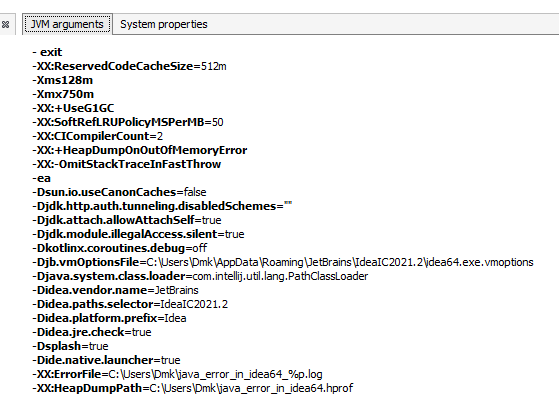
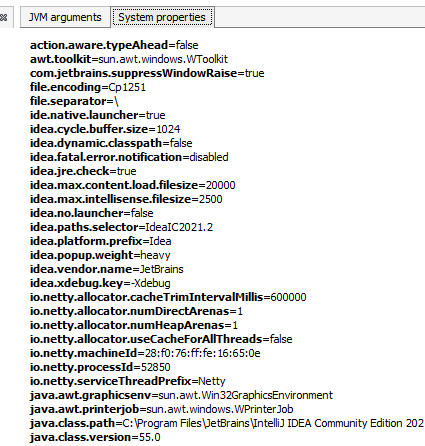

Параметры, с которыми была запущена программа. Это можно увидеть в VusualVM:

System.getProperties(); - sysytem properties:

Map<String, String> getenv = System.getenv(); - получить переменные окружения
Одна из ркеомендаций приложения 12-ти факторов:
- Приложение должно получать настройки из переменных окружения. Т.е. приложение ожидает, что ему положат в переменные окружения настройки настрйку SHOP_DB_USER:
String shop_db_user = getenv.get("SHOP_DB_USER");
----------------------------------------------------------------------------------------------------------------
import java.util.ArrayList;
import java.util.List;
import java.util.Scanner;
public class MainGarbageCollector {
public static void main(String[] args) {
System.out.println("- - - - Invoke GC (Garbage Collector) - - - -");
long m1, m2, m3;
Runtime rt = Runtime.getRuntime(); // Get a runtime instance
Scanner scanner = new Scanner(System.in);
String command = "c";
while (!"q".equals(command)) {
for (int i = 0; i < 3; i++) {
m1 = rt.freeMemory(); // Get free memory
createObject(100000); // Create some objects
m2 = rt.freeMemory(); // Get free memory
if ("c".equals(command)) {
System.gc(); // Invoke garbage collection
}
m3 = rt.freeMemory(); // Get free memory
System.out.println("\nm1=" + m1 + " m2=" + m2 + " m3=" + m3 +
"\nMemory freed by gc() = " + (m3 - m2));
}
System.out.print("Enter \"q\" for Quit, \"c\" for Collect Garbage," +
" and any symbol for Continue: ");
command = scanner.nextLine();
}
}
public static void createObject(int count) {
for (int i = 0; i < count; i++) {
// Do not store the references of new objects, so they sre
// immideatelly eligible for garbage collection
List<Integer> list = new ArrayList<>();
Integer object = i;
list.add(object);
}
}
}